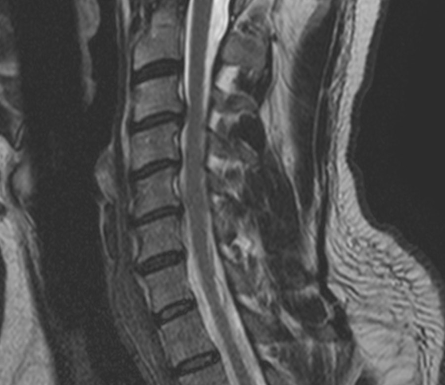
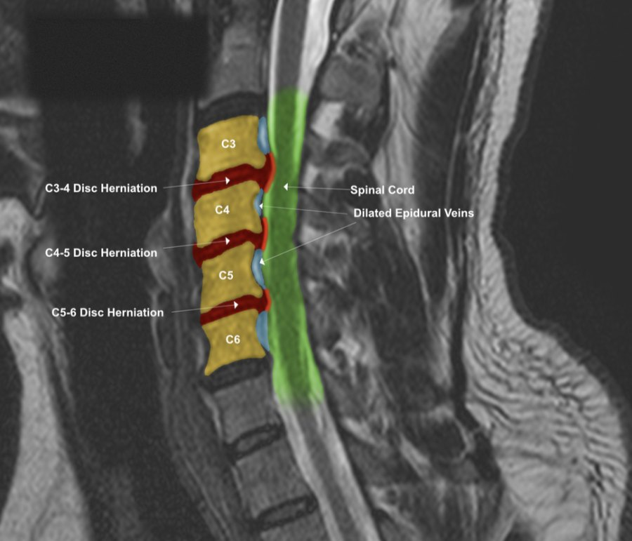
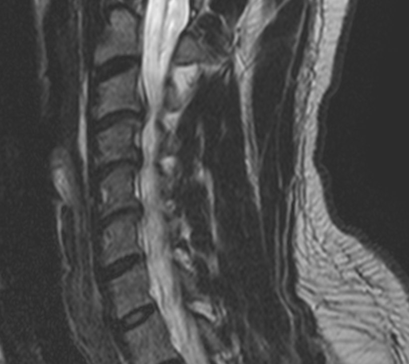
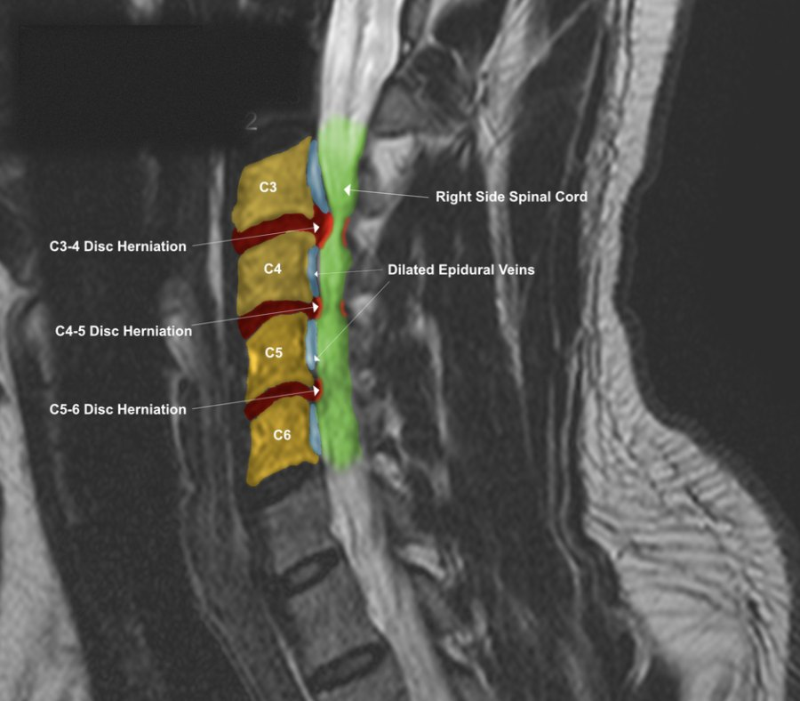

Sagittal T2 MRI of the cervical spine, original slice and colorized exhibit. Patient identifiers have been removed.
Why an MRI Can Be Hard to Follow
An MRI of the neck is a dense grayscale image. A trained reader can pick out a disc herniation or pressure on the spinal cord, but most patients, and many of the people who need to understand the findings, see shades of gray and have to take someone's word for what is there. That is a real problem when a patient is trying to understand why they hurt, when a care team needs to talk about the same finding, or when a case depends on other people grasping what the imaging shows.
What MRI Colorization Is
Colorization is a labeled overlay built from the original MRI images. After reviewing the study, the structures and findings are marked directly on the slice, so a reader can see where each one sits and how it relates to the others. The original image is always shown beside the colorized one, so nothing is hidden and the overlay can be checked against its source.
Colors are chosen to fit the findings in each case, so every exhibit carries its own key and labels. A color means what that exhibit's key says it means, which is why each one should be read with its own legend.
A Closer Look at an Example
The images above and below show two views of the same cervical spine study. In the colorized versions, the labels point out disc herniations at C3-4, C4-5, and C5-6, the spinal cord, and dilated epidural veins. These veins can swell into space that is left when a herniation takes up room in the spinal canal. On the plain slice, that relationship is hard to follow. With the overlay, the discs, the cord, and the veins can be seen together in one glance.


Right parasagittal T2 MRI, original slice and colorized exhibit. Different slices show different parts of the same findings, so more than one view is usually included.
How the Exhibits Are Prepared
- Review the original study. The work starts from the original image files, not from a summary of them, and typically includes both side-view (sagittal) and top-down (axial) T2 sequences.
- Identify the structures and findings. Each finding is confirmed against the original slice before anything is marked.
- Overlay and label. Structures are colored and labeled, and each exhibit gets a key explaining the colors used.
- Present the original beside the colorized version. A written report explains what was reviewed and how the exhibits were made.
Who It Can Help
- Patients can see what their MRI report is describing and how it may relate to their symptoms.
- Treating providers get a clear visual for discussing a finding across a care team.
- Attorneys, adjusters, and jurors can follow the findings in a case without radiology training.
What colorization is not: It does not replace the radiologist's report, it does not add findings that are not in the images, and it does not predict how any one person will do. It is a visual aid built from the original data.
Where Dr. Moore's Training Fits
Dr. Moore is a Fellow in Primary Spine Care (FPSC), and his fellowship included more than 125 credit hours of coursework in MRI physics and spinal biomechanics. He completed mentored MRI spine interpretation training with neuroradiologists Robert Peyster, MD, and Patricia Roche, DO, and with musculoskeletal radiologist Kevin Baker, MD. He is also a Certified Independent Chiropractic Examiner (CICE), and his research on cervical disc herniations has been published through the National Institutes of Health. You can read more on the About page. Patients who are recovering from a collision may also find the whiplash and trauma page helpful.
Dr. Moore also prepares colorized MRI exhibits and written reports as an independent examiner for healthcare providers and attorneys. Information for attorneys is on the For Attorneys page.
Common Questions
Does colorizing change the MRI?
No. The original images are not altered. The colorized exhibit is a separate overlay, and the original slice is shown beside it so the two can be compared.
Does colorization replace the radiologist's report?
No. It does not replace the radiologist's report and it does not add findings that are not in the images. It is a visual aid built from the original study.
Do I need a new MRI to have one colorized?
No. Exhibits are prepared from an MRI that has already been done, using the original image files.
Can colorization be done for any part of the spine?
It depends on the study and the question being asked. Cervical spine studies are shown in this article, and the office can tell you whether your imaging is suitable.
If you would like to know whether your imaging is a good candidate for colorization, you are welcome to contact the office.